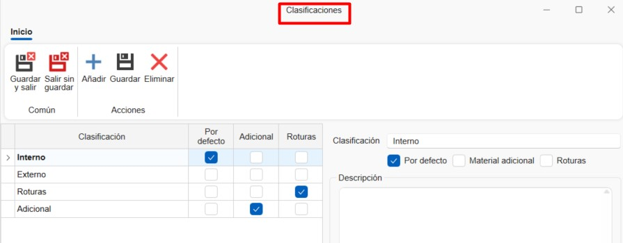
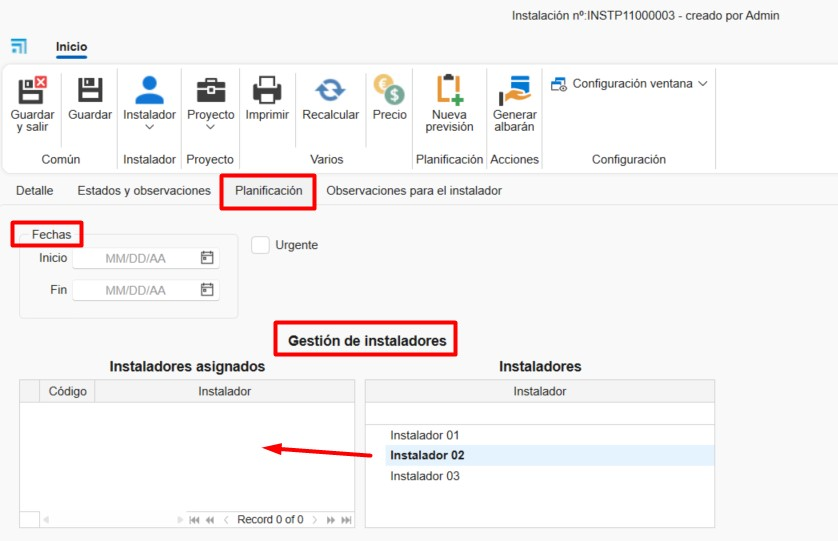
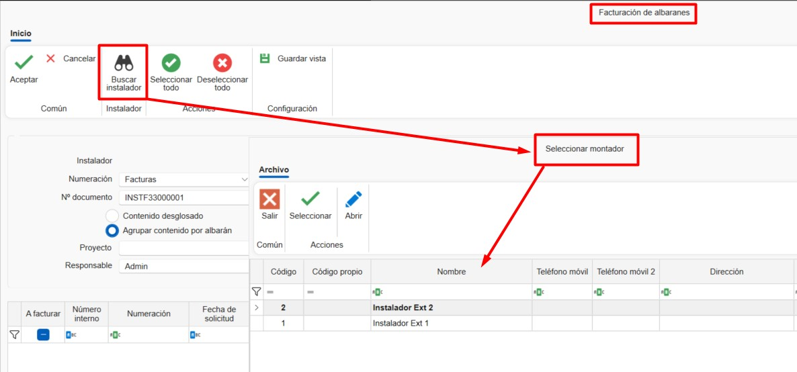
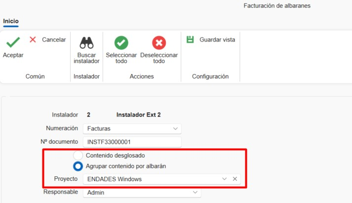
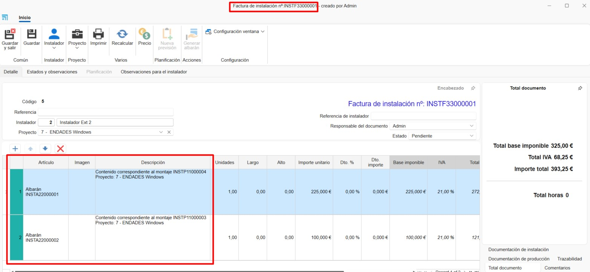
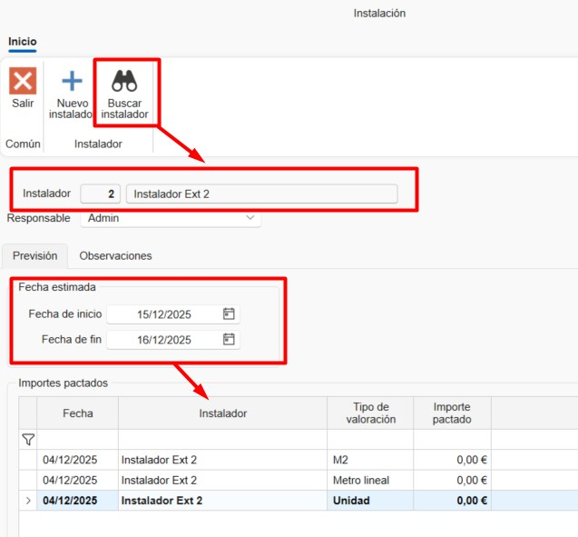
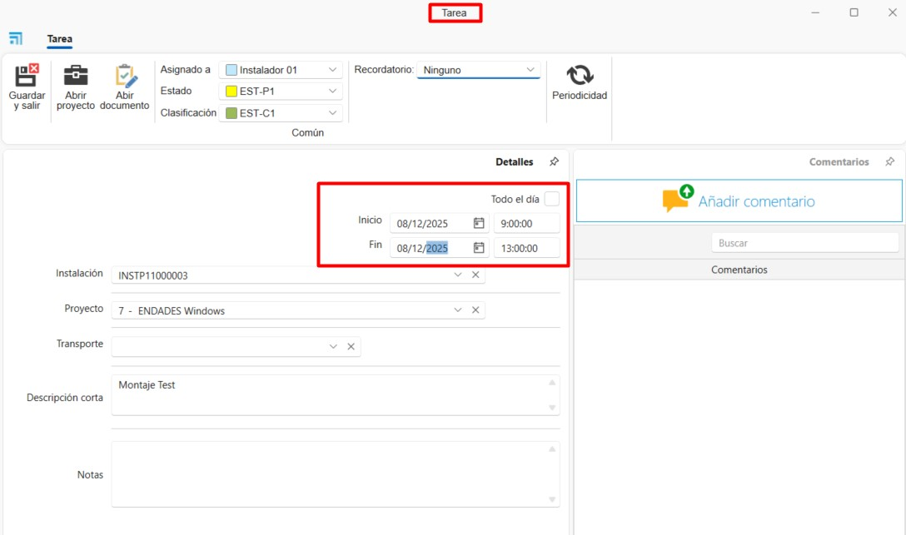

Instalaciones
1. Introducción
Este manual está diseñado para guiar a los usuarios en la creación y planificación de instalaciones y montajes desde ENBLAU. De esta manera, se pueden asignar a los montadores internos y externos las instalaciones planificadas desde la plataforma.
2. Instalaciones
En el módulo de Instalaciones se puede acceder a:

2.1. Instalación
2.1.1. Configuraciones
Desde Instalación se accede a Configuraciones para definir los parámetros del sistema.

1. Numeraciones
Definir las secuencias de numeración para cada tipo de documento.

2. Clasificaciones
Establecer clasificaciones para asignar a los documentos de instalación.

3. Planificador
Definir Clasificaciones y Estados para las tareas del planificador.


ℹ️ Nota: Estas clasificaciones y estados estarán disponibles al crear una nueva tarea en el Planificador de instalación.
4. Directorios por defecto
Configurar las carpetas que se generarán automáticamente con cada instalación.


ℹ️ Nota: Los directorios predeterminados son carpetas que se generan automáticamente con cada nueva instalación.
5. Definición de estados
Configurar los estados disponibles para cada tipo de documento.

2.1.2. Crear un pedido de instalación
1. Nuevo
Para crear una instalación, ir a Instalación → Nuevo. Se abrirá una ventana donde completar los campos obligatorios: - Tipo de documento - Numeración - Numeración de documento - Instalador externo - Proyecto

2. Pedido de instalación
En la cinta superior del documento hay algunas funciones disponibles: - Imprimir → Imprimir informes del documento de instalación. - Precios → Editar los precios predefinidos del Instalador externo. - Nueva previsión → Crear una previsión de la instalación para que se refleje el planificador de instalaciones.
Pestaña Detalle
En esta pestaña se muestran todos los campos previamente completados (editables). En la parte inferior se pueden añadir posiciones definiendo: - Nombre del artículo - Descripción - Unidades - Precio, etc.

Pestaña Estados y observaciones
En esta pestaña se configuran campos como: - Forma de pago - Fechas de solicitud y cancelación - IVA, etc.

Pestaña Planificación
Aquí se indican las fechas de inicio y fin para la planificación y se asignan instaladores internos.

Pestaña Observaciones para instalación
Espacio para añadir notas específicas para la instalación.
3. Albarán de instalación
Desde un pedido de instalación se puede generar un albarán de instalación. Indicando la forma de albaranar y luego imprimirlo.


4. Facturas de instaladores externos
-
Desde el apartado de Instalación ir a Facturación de albaranes.

-
Desde Facturación de albaranes indicar el instalador externos a quien se emitirá la factura.

-
Te aparecerá el listado de albaranes a facturar del instalador seleccionado. Indicar en la columna A factura clicando y marcando el check en la casilla a los albaranes que se va a facturar. También hay la opción en los botones en la cita de arriba de Seleccionar todo o Deseleccionar todo.

-
Antes de generar la factura puedes indicar el modo Agrupar contenido por albarán (seleccionado por defecto) o Contenido desglosado. También se puede indicar a que proyecto emitir la factura.

-
Una vez generado la factura se puede imprimirlo o editarlo si fuera el caso.

2.1.4. Crear instalación desde un documento de venta
Desde un documento de venta (pedido, medición o producción) se puede:
- Crear una previsión de instalación
- Crear una instalación directamente

1. Previsión de instalación
Permite indicar una previsión configurando:
- Instalador externo
- Fecha estimada
- Importes pactados

2. Crear Instalación
Al crear la instalación desde un documento de ventas, se deben indicar las unidades a instalar de cada posición. Posteriormente, se pueden añadir instaladores externos o internos a esa instalación.

2.1.3. Imprimir informes de instalación
Permite imprimir los informes disponibles:
- Parte de instalación
- Partes de tiempos
- Pedido de instalación
Antes de imprimir, se muestran las condiciones y una breve descripción del informe seleccionado.

2.2. Instaladores externos
Para registrar nuevos instaladores externos:
- Ir a Instalación → Instaladores externos → Nuevo
-
Completar los campos requeridos:
- Nombre
- Dirección
- NIF
- Datos de contacto
-
Precios, etc.

2.3. Planificador de instalaciones
Desde Instalaciones → Planificador de Instalaciones se pueden visualizar y gestionar las tareas en un calendario para cada instalador (interno o externo).
Desde la cinta de opciones se puede organizar la vista del calendario (día, semana, mes) y agrupar tareas por recursos o fechas.

1. Crear tarea
Para crear una nueva tarea:
- Seleccionar Nueva tarea
-
En la ventana Nuevo evento de instalación, asignar:
- Instalador
- Número de instalación
-
Proyecto

-
En la ventana de Tarea detallar:
- Estados y clasificaciones
- Fecha y hora de inicio/fin
- Descripción corta
-
Notas

2. Calendario
Las tareas asignadas aparecen en el calendario. Al pasar el cursor sobre una tarea, se muestra información básica:
- Nombre del proyecto
- Número de instalación
- Descripción corta
Los colores indican el estado y la clasificación (definidos previamente en la configuración). También se puede editar con un doble clic sobre la tarea.

 Español
Español
 English
English
 Italiano
Italiano
 Português
Português